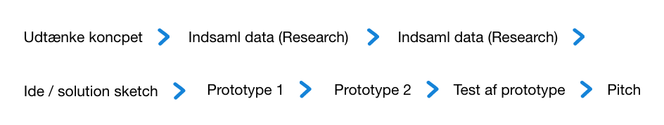

UX
UX forløbet var på mange måder anderledes end vores tidligere grundlæggende web forløb. I UX forløbet blev kodningen lagt midlertidligt på hylen og gjorde i stedet plads til en anden form for forarbejde, hovedsagligt analyse og skitserings arbejde. Projektet bestod i at desgine en webshop der sælger t-shirts. Opgaven endte ud i at lave en prototype i Adobe XD udfra konceptet og pitche ideen.
Opgavens hovedpunkter
- Forstå opgaven udfra givet Breif af case
- Udtænke koncpet (USP, afsender, målgruppe osv.)
- Foretage forskellige former for research
- Gå fra UX Research til ide (Sketch)
- Teste prototype
- Pitche konceptet
Proces
Mit koncept bestod af en bæredygtig E-shop, kaldet Crafted Cloth (CC), som specialiserer sig i at lave tilpasset tøj udfra kropsmål samt at kunne genbruge brugt indsendt tøj. På dette tema lærte vi om den metodiske udvikling fra research til ide. Til denne proces arbejde vi meget lightning demos og sketch. Denne form for idegenering blev også benyttet på sidste tema som en del af redesign opgaven.
Jeg benyttede her 4 typer af Research (desk, observation, interview samt survey research, til at skabe grundlag for den viden og de indsigter der basserede sig på mit koncpet. En kombination af disse kvalitative og kvantitavie researchformer ledte til videreudvikling af konceptet.
Processens overordnet fremgangsmåde
På temaet lærte jeg mere i forhold til fotostil og de overvejelser der ligger bag. UX forløbet gav desuden mulighed for at udvide mine kompetencer og mit kendskab til XD endnu mere end det tidligere forløb.
bemærkninger
I fremtiden skulle prototype og pith have haft fokus på en af konceptets hovedfunktioner, enten den skræddersyet del eller den genbrugelige del. Der blev meget at forhodle sig til. Ved at fravælge den ene kunne test af prototype og pitch af koncept være blevet koncentreret mere og der kunne være blevet arbejdet mere i detaljer.
Udforsk prototype 2 her
Se pitchen her